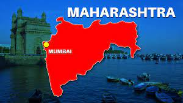

Maharashtra (/məhɑːˈrɑːʃtrə/; Marathi: [məharaːʂʈɾə] (listen), abbr. MH or Maha) is a state in the western peninsular region of India occupying a substantial portion of the Deccan Plateau. Maharashtra is the second-most populous state in India and the second-most populous country subdivision globally. It was formed on 1 May 1960 by splitting the bilingual Bombay State, which had existed since 1956, into majority Marathi-speaking Maharashtra and Gujarati-speaking Gujarat. Maharashtra is home to the Marathi people, the predominant ethno-linguistic group, who speak the Marathi language, the official language of the state. The state is divided into 6 divisions and 36 districts, with the state capital being Mumbai, the most populous urban area in India, and Nagpur serving as the winter capital, which also hosts the winter session of the state legislature.[9] Godavari and Krishna are the two major rivers in the state. Forests cover 16.47 per cent of the state's geographical area. Out of the total cultivable land in the state, about 60 per cent is used for grain crops in the Deccan region, rice in coastal Konkan, and other high rainfall areas
The glory of Maharashtra will grow like the first day moon. It will be worshipped by the world and will shine only for the well being of people.
The glory of Maharashtra will grow like the first day moon. It will be worshipped by the world and will shine only for the well being of people.